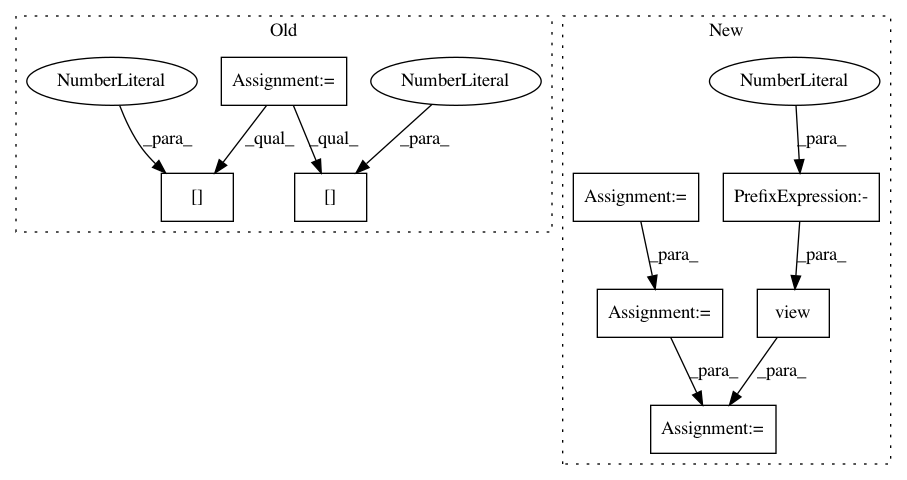

9b664bd7cd8dbb9657626166ba61887ed06774d7,gpytorch/utils/toeplitz.py,,index_coef_to_sparse,#Any#Any#Any#,6
Before Change
W[i, index_matrix[i, j]] = value_matrix[i, j].
num_target_points, num_coefficients = value_matrix.size()
index_list = [[], []]
value_list = []
for i in range(num_target_points):
for j in range(num_coefficients):
if value_matrix[i, j] == 0:
continue
index_list[0].append(i)
index_list[1].append(index_matrix[i, j])
value_list.append(value_matrix[i, j])
index_tensor = torch.LongTensor(index_list)
After Change
num_target_points, num_coefficients = value_matrix.size()
row_tensor = torch.arange(0, num_target_points).unsqueeze(1)
row_tensor = row_tensor.repeat(1, num_coefficients).type_as(index_matrix)
index_tensor = torch.cat([row_tensor.view(1, -1), index_matrix.view(1, -1)], 0)
value_tensor = value_matrix.view(-1)
nonzero_indices = value_tensor.nonzero()
if nonzero_indices.storage():
nonzero_indices.squeeze_()
index_tensor = index_tensor.index_select(1, nonzero_indices)
value_tensor = value_tensor.index_select(0, nonzero_indices)
else:
index_tensor = index_tensor.resize_(2, 1).zero_()
value_tensor = value_tensor.resize_(1).zero_()
In pattern: SUPERPATTERN
Frequency: 3
Non-data size: 8
Instances
Project Name: cornellius-gp/gpytorch
Commit Name: 9b664bd7cd8dbb9657626166ba61887ed06774d7
Time: 2017-09-13
Author: gpleiss@gmail.com
File Name: gpytorch/utils/toeplitz.py
Class Name:
Method Name: index_coef_to_sparse
Project Name: osmr/imgclsmob
Commit Name: 4d6aeeca8a6397fb0c2ce1aa0679155c21c6cbbb
Time: 2019-03-03
Author: osemery@gmail.com
File Name: pytorch/pytorchcv/models/isqrtcovresnet.py
Class Name: Triuvec
Method Name: backward
Project Name: eriklindernoren/PyTorch-GAN
Commit Name: a4697d7e45e66a3264eb56dcf489d67d4df40d23
Time: 2018-04-23
Author: eriklindernoren@gmail.com
File Name: implementations/cgan/cgan.py
Class Name: Discriminator
Method Name: forward